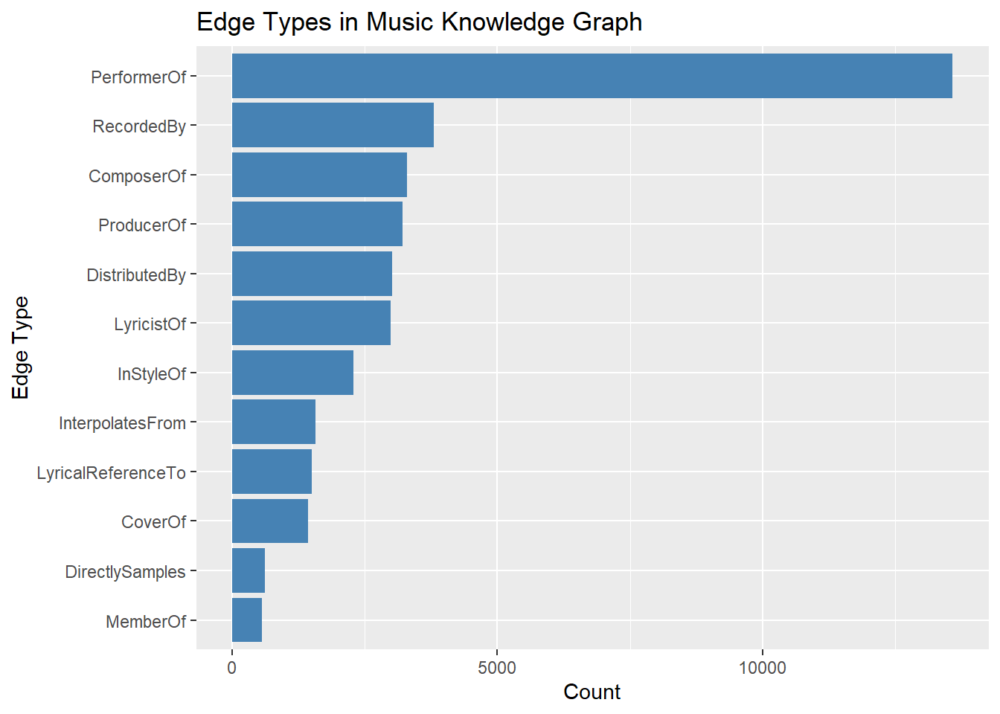
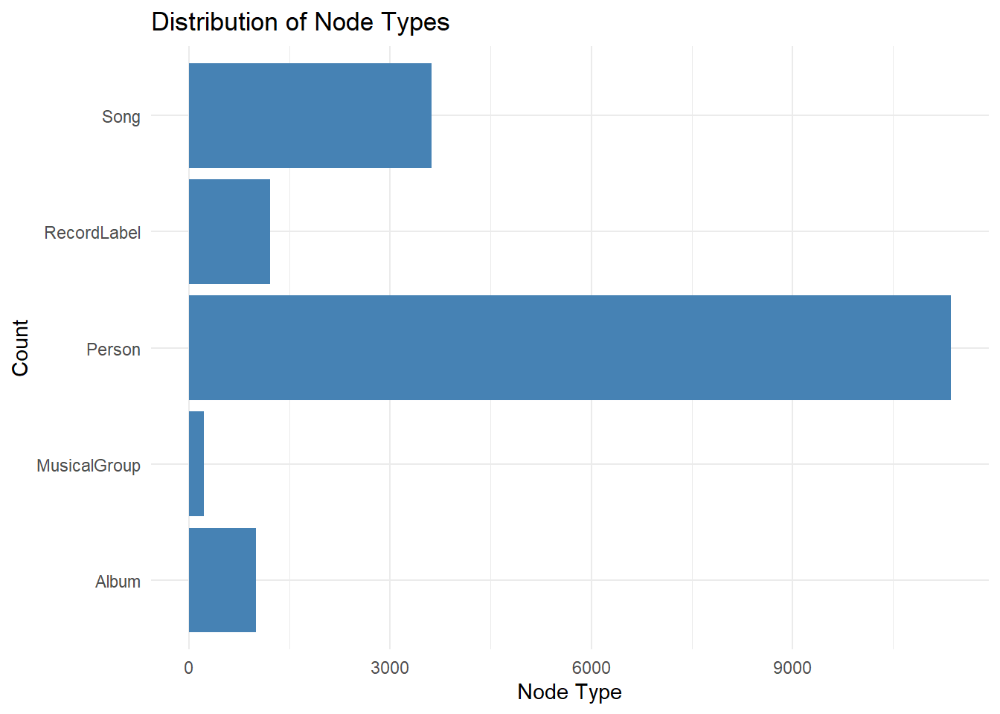
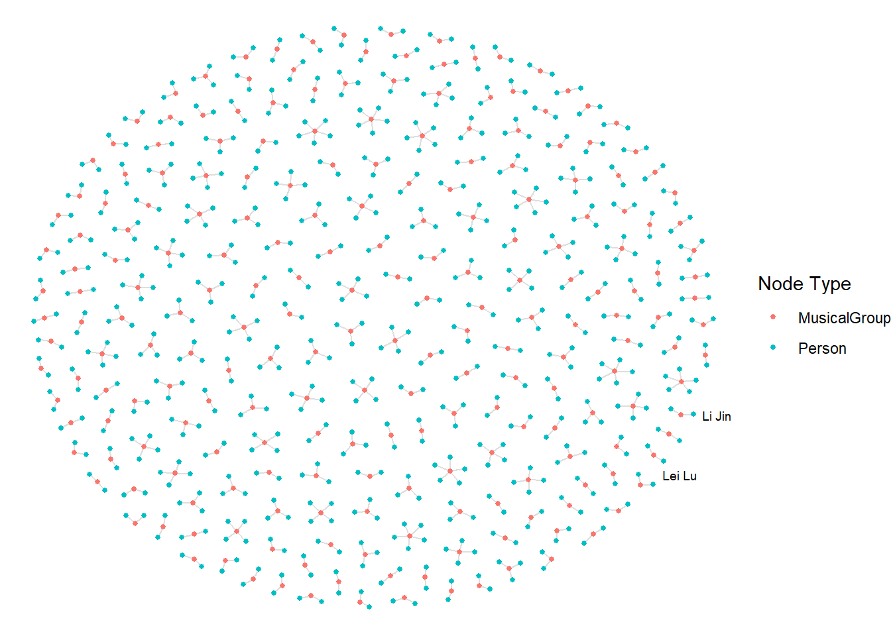
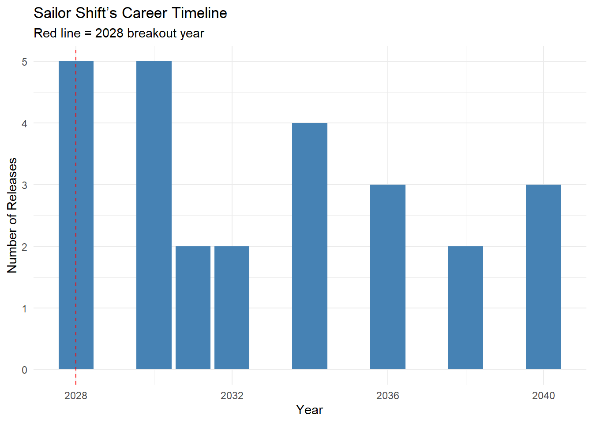
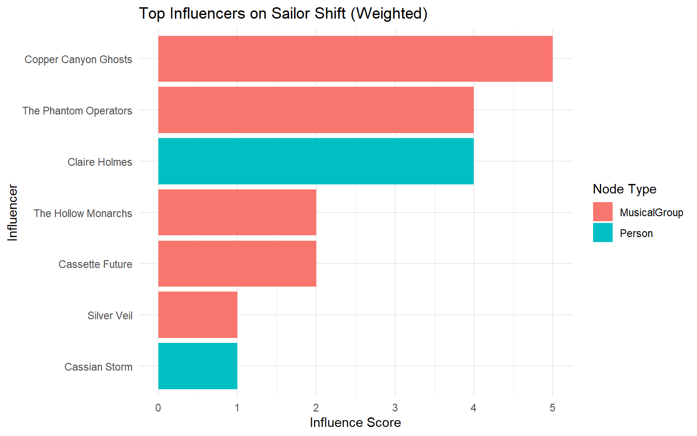

pacman::p_load(tidyverse, jsonlite, SmartEDA, tidygraph, ggraph)Take-home_Exercise02
tidyverse
haven
ggrepel
ggthemes
ggridges
ggdist
patchwork
scales
VAST Challenge 2025 Mini-Challenge 1
1 Overview
In this exercise, we will be tacking Mini-case 1 of VAST Challenge 2025.
This case study explores the career trajectory of Oceanus Folk artist Sailor Shift using network visual analytics. The goal is to understand her collaborations, influences, and her role in the evolution and diffusion of the Oceanus Folk genre.
We are going to design and develop visualizations and visual analytic tools to solve following questions.
1.1 The data
We will use the dataset provided by VAST Challenge. We utilize a JSON network graph (MC1_graph.json) which comprises nodes (Artists, Albums, Songs, Organizations, Bands) and edges (relationships).
1.2 Methodology
To answer all three questions, we have to develop beautiful and informative visualizations of this data and uncover new and interesting information about Sailor’s influence.
Firstly, using directed multigraph to trace connections, collaborations, and influence paths in Sailor Shift’s career.
Secondly, using ego-networks of individuals can provide insight into why one individual’s perceptions, identity, and behavior differ from another’s. This can identify collaborators she worked with and spot key influencers and those influenced by her.
Thirdly, Timeline Animation animation-timeline is included in the animation shorthand as a reset-only value. This means that including animation resets a previously-declared animation-timeline value to auto, but a specific value cannot be set via animation. In thi case, each frame shows the number of Oceanus Folk songs released that year and helps identify bursts of popularity.
Lastly, Centrality Measures, it is used for finding very connected individuals, popular individuals, individuals who are likely to hold most information. PageRank is used to rank artits and predict the future.
2 Setup
2.1 Loading Packages
jsonlite: To convert JSON data to R objects
tidyverse: Collection of R packages designed for data science
ggraph: To support relational data structures
tidygraph: Two tidy data frames describing node and edge data respectively.
igraph: Routines for simple graphs and network analysis
lubridate: R package that makes it easier to work with dates and times.
gganimate: The description of animation
gifski: To create animated GIF images with thousands of colors per frame
2.2 Importing Knowledge Graph Data
kg <- fromJSON("MC1_graph.json")2.3 Inspect Structure
str(kg,max.level=1)List of 5
$ directed : logi TRUE
$ multigraph: logi TRUE
$ graph :List of 2
$ nodes :'data.frame': 17412 obs. of 10 variables:
$ links :'data.frame': 37857 obs. of 4 variables:2.4 Extract and Inspect
nodes_tb1 <- as_tibble(kg$nodes)
edges_tb1 <- as_tibble(kg$links)3 Initial EDA
3.1 Edge Types for Influence Detection
edges_tb1 %>%
count(`Edge Type`) %>%
arrange(desc(n)) %>%
ggplot(aes(x = reorder(`Edge Type`, n), y = n)) +
geom_col(fill = "steelblue") +
coord_flip() +
labs(title = "Edge Types in Music Knowledge Graph", x = "Edge Type", y = "Count")
3.2 Count each Node Type in your knowledge graph
ggplot(nodes_tb1, aes(x = `Node Type`)) +
geom_bar(fill = "steelblue") +
coord_flip() +
labs(title = "Distribution of Node Types", x = "Count", y = "Node Type") +
theme_minimal()
3.3 Quick scan of missing values
SmartEDA::ExpData(data = nodes_tb1, type = 1) # Summary table Descriptions Value
1 Sample size (nrow) 17412
2 No. of variables (ncol) 10
3 No. of numeric/interger variables 1
4 No. of factor variables 0
5 No. of text variables 7
6 No. of logical variables 2
7 No. of identifier variables 1
8 No. of date variables 0
9 No. of zero variance variables (uniform) 0
10 %. of variables having complete cases 30% (3)
11 %. of variables having >0% and <50% missing cases 0% (0)
12 %. of variables having >=50% and <90% missing cases 40% (4)
13 %. of variables having >=90% missing cases 30% (3)3.4 Specific focus
nodes_tb1 %>%
summarise(across(c(name, `Node Type`, genre, release_date, notable), ~ sum(is.na(.)))) %>%
pivot_longer(everything(), names_to = "Field", values_to = "Missing Count")# A tibble: 5 × 2
Field `Missing Count`
<chr> <int>
1 name 0
2 Node Type 0
3 genre 12801
4 release_date 12801
5 notable 12801Based on the nodes_tb1, these missing values are from non-song and non-album nodes. Mostly, they are under Person,RecordLabel,and MusicalGroup column. Those columns do not require genre,release_date,or notable.
3.5 Visualizing only complete records
nodes_tb1_filtered <- nodes_tb1 %>%
filter(`Node Type` %in% c("Song", "Album")) %>%
drop_na(genre, release_date)3.6 Creating Knowledge Graph
Step 1: Mapping from node id to row index
Before we can go ahead to build the tidygraph object, it is important for us to ensures each id from the node list is mapped to the correct row number. This requirement can be achive by using the code chunk below.
id_map<- tibble(id= nodes_tb1$id,
index = seq_len(
nrow(nodes_tb1)))This ensures each id from your node list is mapped to the correct row number.
To avoid residual columns, run this before repeating joins:
edges_tb1 <- edges_tb1 %>%
select(-starts_with("from"), -starts_with("to"))Step 2 : Map source and target IDs to row indices
Next, we will map the source and the target IDs to row indices by using the code chunk below.
edges_tb1 <- edges_tb1 %>%
left_join(id_map %>% rename(from = index), by = c("source" = "id")) %>%
left_join(id_map %>% rename(to = index), by = c("target" = "id"))Step 3: Filter out any unmatched(invalid) edges
edges_tb1 <- edges_tb1 %>%
filter(!is.na(from), !is.na(to))Step 4: creating the graph
Lastly,tbl_grph() is used to create tidygraph’s graph object by using the code chunk below.
graph = tbl_graph(nodes = nodes_tb1,
edges = edges_tb1,
directed = kg$directed)4 Visualising the knowledge graph
set.seed(1234)4.1 Visualising the whole Graph
ggraph(graph,layout = "fr") +
geom_edge_link(alpha = 0.3,
colour = "gray")+
geom_node_point(aes(color = `Node Type`),
size = 4) +
geom_node_text(aes(label = name),
repel = TRUE,
size = 2.5) +
theme_void()4.2 Visualising the sub-graph
Step 1: Filter edges to onliy “Memberof”
graph_memberof <- graph %>%
activate(edges) %>%
filter(`Edge Type` == "MemberOf")Step 2: Extract only connected nodes(i.e. used in these edges)
used_node_indices<- graph_memberof %>%
activate(edges) %>%
as_tibble() %>%
select(from, to) %>%
unlist() %>%
unique()Step 3: Keep only those nodes
graph_memberof <- graph_memberof %>%
activate(nodes) %>%
mutate(row_id = row_number()) %>%
filter(row_id %in% used_node_indices) %>%
select(-row_id) #optional cleanupStep 4: Plot the sub-graph
This graph shows her early connections and collaborators, which shaped her musical direction and laid the groundwork for future influences across Oceanus Folk.
set.seed(1234)
ggraph(graph_memberof,
layout = "fr") +
geom_edge_link(alpha = 0.5,
colour = "gray") +
geom_node_point(aes(color = `Node Type`),
size = 1) +
geom_node_text(aes(label = name),
repel = TRUE,
size = 2.5) +
theme_void()
5 Sailor Shift’s Career Timeline
# Step 1: Get Sailor's ID
sailor_id <- nodes_tb1 %>% filter(name == "Sailor Shift") %>% pull(id)
# Step 2: Get performance/composition edges
sailor_edges <- edges_tb1 %>%
filter(source == sailor_id,
`Edge Type` %in% c("PerformerOf", "ComposerOf"))
# Step 3: Join with work nodes (songs/albums)
library(lubridate)
sailor_works <- sailor_edges %>%
left_join(nodes_tb1, by = c("target" = "id")) %>%
filter(`Node Type` %in% c("Song", "Album")) %>%
mutate(
release_date_clean = parse_date_time(release_date, orders = c("Ymd", "Y-m-d", "Y", "Ym")),
year = year(release_date_clean)
) %>%
filter(!is.na(year)) %>%
select(name, `Node Type`, release_date, year, notable)
# Step 4: Timeline plot: Number of releases per year
sailor_works %>%
count(year) %>%
ggplot(aes(x = year, y = n)) +
geom_col(fill = "steelblue") +
geom_vline(xintercept = 2028, color = "red", linetype = "dashed") +
labs(
title = "Sailor Shift’s Career Timeline",
subtitle = "Red line = 2028 breakout year",
x = "Year",
y = "Number of Releases"
) +
theme_minimal()
6 Who has she been most influenced by over time?
# Step 0: Define influence types from edge weights
edge_weights <- tibble(
`Edge Type` = c("DirectlySamples", "InterpolatesFrom", "CoverOf", "InStyleOf", "LyricalReferenceTo"),
weight = c(5, 4, 3, 2, 1)
)
influence_types <- edge_weights$`Edge Type`
# Step 1: Get Sailor’s ID
sailor_id <- nodes_tb1 %>%
filter(name == "Sailor Shift") %>%
pull(id)
# Step 2: Filter all edges where someone influenced her
influences_on_sailor <- edges_tb1 %>%
filter(target == sailor_id, `Edge Type` %in% influence_types)
# Step 3: Weighted Influence Scores
top_weighted <- influences_on_sailor %>%
left_join(edge_weights, by = "Edge Type") %>%
group_by(source) %>%
summarise(score = sum(weight, na.rm = TRUE)) %>%
left_join(nodes_tb1, by = c("source" = "id")) %>%
arrange(desc(score)) %>%
select(name, `Node Type`, genre, score)
# Step 4: Plot
top_weighted %>%
slice_max(score, n = 10) %>%
ggplot(aes(x = reorder(name, score), y = score, fill = `Node Type`)) +
geom_col() +
coord_flip() +
labs(
title = "Top Influencers on Sailor Shift (Weighted)",
x = "Influencer",
y = "Influence Score"
) +
theme_minimal()
7 Who has she collaborated with and directly or indirectly influenced?
7.1 Who has Sailor collaborated with?
Collaboration means artists who worked on the same songs or albums with Sailor.
collab_types <- c("PerformerOf", "ComposerOf", "ProducerOf", "LyricistOf")
# Get Sailor's ID
sailor_id <- nodes_tb1 %>% filter(name == "Sailor Shift") %>% pull(id)
# Find works Sailor contributed to
sailor_works <- edges_tb1 %>%
filter(source == sailor_id, `Edge Type` %in% collab_types) %>%
pull(target)
# Find other artists who also worked on those works
collaborators <- edges_tb1 %>%
filter(target %in% sailor_works, `Edge Type` %in% collab_types, source != sailor_id) %>%
left_join(nodes_tb1, by = c("source" = "id")) %>%
distinct(name, `Node Type`, genre, notable)After running the code above, we can get a list of Sailor’s direct collaborators, many of whom may also be emerging Oceanus Folk artists.
7.2 Who has Sailor influenced(directly or indirectly)
Direct influence: Works that sample, cover, or are inspired by Sailor’s work.
Indirect influence: Artists influenced by those directly influenced by Sailor.
influence_types <- c("InStyleOf", "CoverOf", "LyricalReferenceTo", "InterpolatesFrom", "DirectlySamples")
# Step 1: Direct influence: who did Sailor influence?
sailor_influence_targets <- edges_tb1 %>%
filter(source == sailor_id, `Edge Type` %in% influence_types) %>%
pull(target)
direct_influenced <- nodes_tb1 %>% filter(id %in% sailor_influence_targets)
# Step 2: Indirect influence: who did THEY influence?
indirect_influence_targets <- edges_tb1 %>%
filter(source %in% sailor_influence_targets, `Edge Type` %in% influence_types) %>%
pull(target)
indirect_influenced <- nodes_tb1 %>% filter(id %in% indirect_influence_targets)7.3 All direct and indirect influence targets in one list
influence_all <- bind_rows(
direct_influenced %>% mutate(level = "Direct"),
indirect_influenced %>% mutate(level = "Indirect")
) %>%
distinct(id, name, `Node Type`, genre, level)7.4 visNetwork Visualization of Sailor Shift’s Collaborators and Direct/Indirect Influence
collaborator_ids <- collaborators %>%
left_join(nodes_tb1, by = "name") %>%
pull(id)
nodes_combined <- nodes_tb1 %>%
filter(id %in% c(sailor_id, collaborator_ids, direct_influenced$id, indirect_influenced$id)) %>%
mutate(role = case_when(
id == sailor_id ~ "Sailor",
id %in% collaborator_ids ~ "Collaborator",
id %in% direct_influenced$id ~ "Direct Influence",
id %in% indirect_influenced$id ~ "Indirect Influence",
TRUE ~ "Other"
))library(dplyr)
library(visNetwork)
# Step 1: Setup
collab_types <- c("PerformerOf", "ComposerOf", "ProducerOf", "LyricistOf")
influence_types <- c("InStyleOf", "CoverOf", "LyricalReferenceTo", "InterpolatesFrom", "DirectlySamples")
# Step 2: Get Sailor's ID
sailor_id <- nodes_tb1 %>% filter(name == "Sailor Shift") %>% pull(id)
# Step 3: Collaboration network (works + co-creators)
sailor_works <- edges_tb1 %>%
filter(source == sailor_id, `Edge Type` %in% collab_types) %>%
pull(target)
collaborator_edges <- edges_tb1 %>%
filter(target %in% sailor_works,
`Edge Type` %in% collab_types,
source != sailor_id)
collaborator_ids <- collaborator_edges$source
# Step 4: Direct influence
direct_ids <- edges_tb1 %>%
filter(source == sailor_id, `Edge Type` %in% influence_types) %>%
pull(target)
# Step 5: Indirect influence
indirect_ids <- edges_tb1 %>%
filter(source %in% direct_ids, `Edge Type` %in% influence_types) %>%
pull(target)
# Step 6: Combine node IDs
all_ids <- unique(c(sailor_id, collaborator_ids, direct_ids, indirect_ids))
nodes_combined <- nodes_tb1 %>%
filter(id %in% all_ids) %>%
mutate(role = case_when(
id == sailor_id ~ "Sailor",
id %in% collaborator_ids ~ "Collaborator",
id %in% direct_ids ~ "Direct Influence",
id %in% indirect_ids ~ "Indirect Influence",
TRUE ~ "Other"
)) %>%
mutate(
label = name,
title = paste0("<b>", name, "</b><br>Type: ", `Node Type`, "<br>Role: ", role),
group = role
)
# Step 7: Combine edges among relevant nodes
edges_combined <- edges_tb1 %>%
filter(source %in% nodes_combined$id & target %in% nodes_combined$id)
# Remove existing `from`/`to` if present
if ("from" %in% colnames(edges_combined) | "to" %in% colnames(edges_combined)) {
edges_combined <- edges_combined %>%
select(-from, -to)
}
# Now safely rename
edges_vis <- edges_combined %>%
rename(from = source, to = target) %>%
mutate(arrows = "to")
# Step 8: Plot using visNetwork
visNetwork(nodes_combined, edges_combined) %>%
visOptions(highlightNearest = TRUE, nodesIdSelection = TRUE) %>%
visGroups(groupname = "Sailor", color = "red") %>%
visGroups(groupname = "Collaborator", color = "#1f78b4") %>%
visGroups(groupname = "Direct Influence", color = "#33a02c") %>%
visGroups(groupname = "Indirect Influence", color = "#b2df8a") %>%
visPhysics(solver = "forceAtlas2Based") %>%
visLayout(randomSeed = 1234) %>%
visLegend() %>%
visExport()8 How has she influenced collaborators of the broader Oceanus Folk community?
8.1 Summary Table for Each Person collaborated with Sailor
collab_types <- c("PerformerOf", "ComposerOf", "ProducerOf", "LyricistOf")
# Get Sailor's ID
sailor_id <- nodes_tb1 %>% filter(name == "Sailor Shift") %>% pull(id)
# Get works Sailor contributed to
sailor_works <- edges_tb1 %>%
filter(source == sailor_id, `Edge Type` %in% collab_types) %>%
pull(target)
# Define collab_edges
collab_edges <- edges_tb1 %>%
filter(target %in% sailor_works, `Edge Type` %in% collab_types)
# Count how many times each person collaborated with Sailor
collaborator_summary <- collab_edges %>%
filter(target %in% sailor_works, source != sailor_id) %>%
group_by(source) %>%
summarise(collab_count = n()) %>%
left_join(nodes_tb1, by = c("source" = "id")) %>%
select(name, `Node Type`,collab_count) %>%
arrange(desc(collab_count))
# Show top 10 collaborators
collaborator_summary %>% head(10)# A tibble: 10 × 3
name `Node Type` collab_count
<chr> <chr> <int>
1 "Maya Jensen" Person 4
2 "Arlo Sterling" Person 3
3 "Lyra Blaze" Person 3
4 "Orion Cruz" Person 3
5 "Elara May" Person 3
6 "Cassian Rae" Person 3
7 "The Brine Choir" MusicalGroup 3
8 "Lila \"Lilly\" Hartman" Person 3
9 "Jade Thompson" Person 3
10 "Sophie Ramirez" Person 38.2 Starting to plot graphs
Step 1: Filter Collaborators of Sailor
collab_types <- c("PerformerOf", "ComposerOf", "ProducerOf", "LyricistOf")
sailor_id <- nodes_tb1 %>% filter(name == "Sailor Shift") %>% pull(id)
sailor_works <- edges_tb1 %>%
filter(source == sailor_id, `Edge Type` %in% collab_types) %>%
pull(target)
collaborator_edges <- edges_tb1 %>%
filter(target %in% sailor_works,
`Edge Type` %in% collab_types,
source != sailor_id)
collaborators <- nodes_tb1 %>%
filter(id %in% collaborator_edges$source)Step 2:Did those collaborators go on to influence others?
influence_types <- c("InStyleOf", "CoverOf", "LyricalReferenceTo", "InterpolatesFrom", "DirectlySamples")
# Influence edges originating from collaborators
collab_influence_edges <- edges_tb1 %>%
filter(source %in% collaborators$id,
`Edge Type` %in% influence_types)
# Who they influenced
collab_influence_targets <- nodes_tb1 %>%
filter(id %in% collab_influence_edges$target)Step 3: Filter Oceanus Folk Targets
oceanus_targets <- collab_influence_targets %>%
filter(str_to_lower(genre) == "oceanus folk")Step 4: Plot the visNetwork graph
# Step 1: Ensure IDs are characters and unique in nodes
nodes_used <- nodes_tb1 %>%
filter(id %in% c(sailor_id, collaborators$id, collab_influence_edges$target)) %>%
mutate(id = as.character(id)) %>%
distinct(id, .keep_all = TRUE)
# Step 2: Get valid ID list
valid_ids <- nodes_used$id
# Step 3: Filter edges and rename safely
edges_used_clean <- edges_tb1 %>%
filter(`Edge Type` %in% influence_types,
source %in% valid_ids,
target %in% valid_ids) %>%
mutate(source = as.character(source), target = as.character(target)) %>%
select(source, target, `Edge Type`) %>%
rename(from = source, to = target)
graph_influence <- tbl_graph(
nodes = nodes_used,
edges = edges_used_clean,
node_key = "id",
directed = TRUE
)library(visNetwork)
# Step 1: Prepare nodes for visNetwork
nodes_vis <- nodes_used %>%
mutate(
id = as.character(id),
label = name,
title = paste0("<b>", name, "</b><br>Type: ", `Node Type`, "<br>Genre: ", genre),
group = `Node Type`, # Node coloring by type
color = case_when(
`Node Type` == "Person" ~ "#1f78b4",
`Node Type` == "Song" ~ "#33a02c",
`Node Type` == "Album" ~ "#fb9a99",
TRUE ~ "#cccccc"
)
) %>%
select(id, label, title, group, color)
# Step 2: Prepare edges for visNetwork
edges_vis <- edges_used_clean %>%
mutate(
arrows = "to",
label = `Edge Type`,
color = "#999999"
) %>%
select(from, to, label, arrows, color)
# Step 3: Plot with visNetwork
visNetwork(nodes_vis, edges_vis, height = "700px", width = "100%") %>%
visEdges(smooth = FALSE) %>%
visOptions(highlightNearest = TRUE, nodesIdSelection = TRUE) %>%
visLegend() %>%
visLayout(randomSeed = 1234) %>%
visPhysics(stabilization = TRUE)